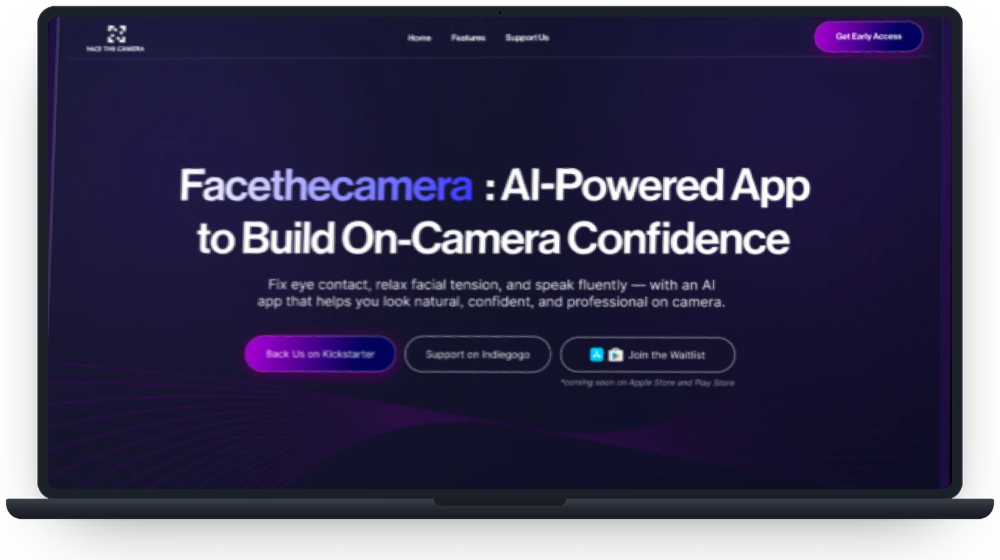
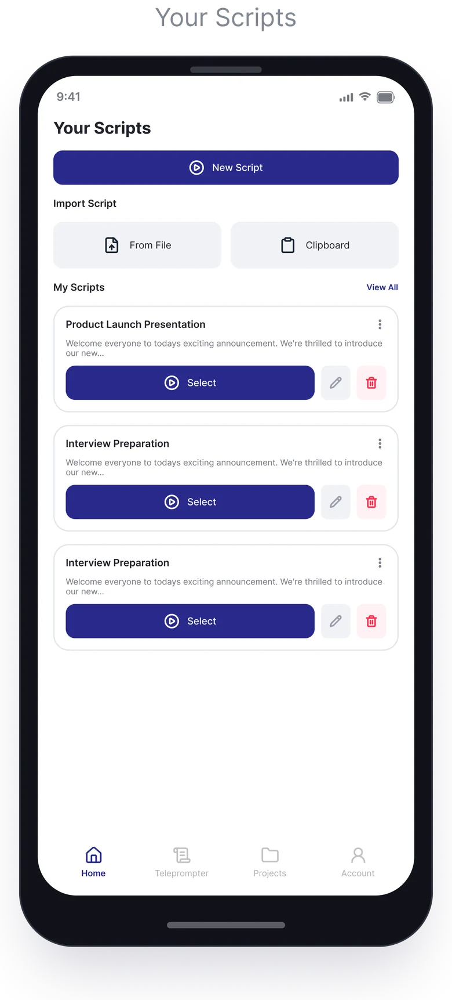
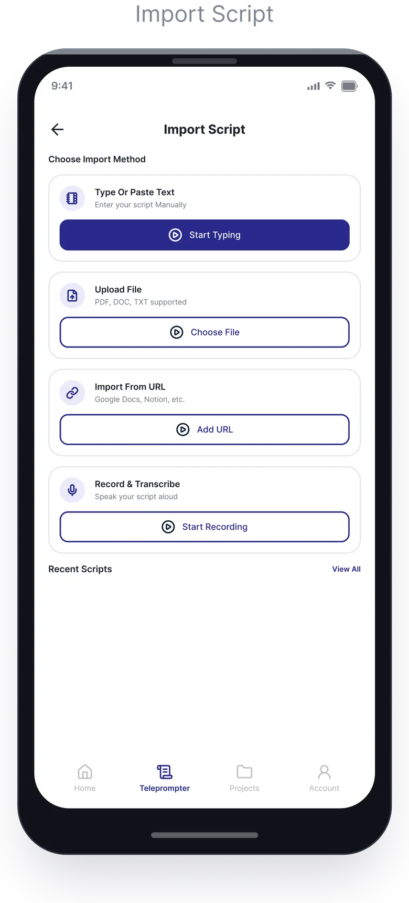
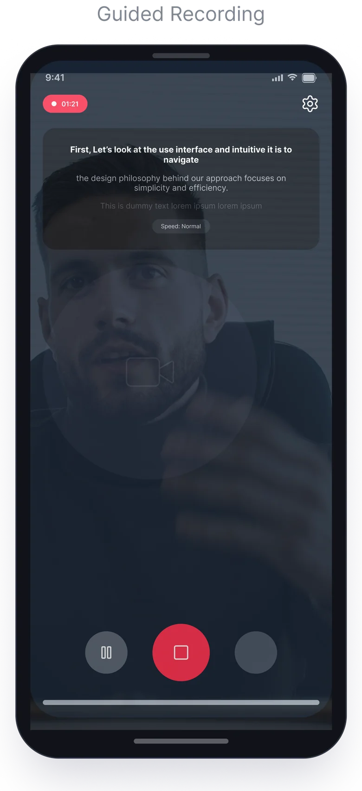
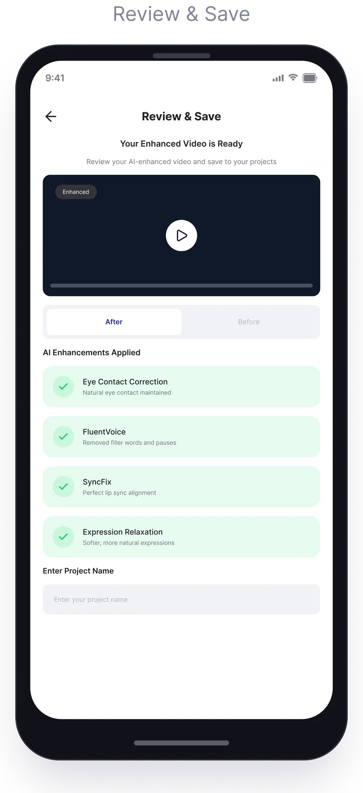
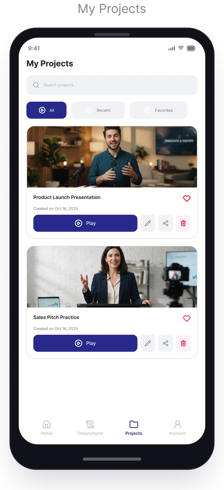
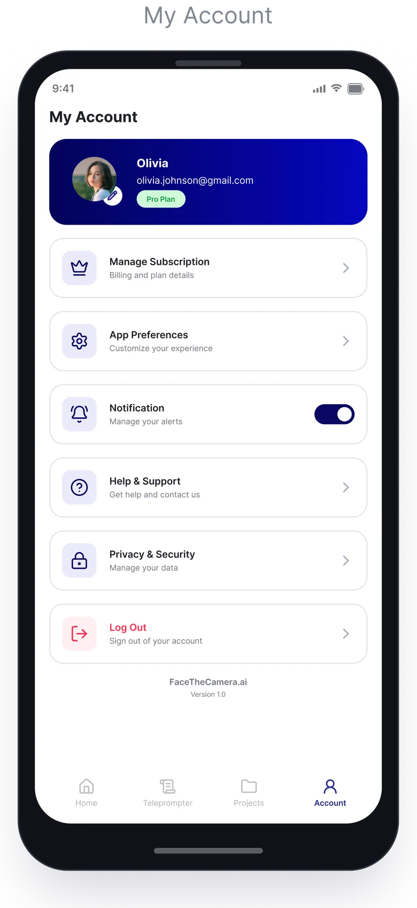

AI Teleprompter
Web app dan pengalaman marketing modern untuk tool teleprompter berbasis AI, yang membantu profesional dan kreator merekam presentasi video dengan percaya diri dan tanpa menghafal naskah, langsung dari browser.
 [Gambar cover]
[Gambar cover]Dari naskah kosong sampai rekaman yang percaya diri — dalam tiga langkah.
Desain web siap produksi
Arsitektur UI web berbasis komponen yang lengkap, dioptimalkan agar cepat diimplementasikan developer dan responsif.
UX studio web yang mulus
Pengaturan video AI disederhanakan menjadi workflow 3 langkah yang rapi: tempel naskah, atur tempo, rekam.
Antarmuka produk yang mendorong konversi
Estetika marketing dan perekaman yang rapi, meningkatkan kepercayaan pada brand dan memudahkan pembuatan video di depan kamera.
Masalahnya
Banyak profesional dan kreator konten kesulitan saat merekam pitch video, demo produk dan presentasi. Menghafal naskah panjang memakan waktu, sementara teleprompter tradisional sering membuat mata melirik canggung keluar kamera, tampilan berantakan, dan penyampaian yang kurang rapi.
Untuk siapa
Eksekutif bisnis & founder
Merekam update perusahaan, pitch deck dan presentasi untuk investor.
Tim sales & marketing
Membuat demo produk yang personal, video outreach ke klien dan follow-up penjualan.
Kreator konten & edukator
Memproduksi kursus online, video media sosial dan tutorial yang terstruktur dengan efisien.
Yang saya desain
Landing page produk
Website dark mode yang ramping dan modern, dirancang untuk menjelaskan fitur AI dengan jelas, membangun kredibilitas produk dan mendorong adopsi user.
Studio teleprompter pintar
Antarmuka web app yang minimal dan bebas distraksi, dengan preview kamera live dan kontrol overlay naskah.
UI posisi naskah sejajar mata
Logika layout adaptif yang menahan teks bergulir dekat lensa kamera, supaya kontak mata tetap stabil dan natural.
Kontrol tempo & highlight
Pengaturan intuitif untuk kecepatan gulir, ukuran font dan highlight poin penting, agar ritme bicara terasa mudah.
Cara saya mengerjakannya
01 — Analisis pasar & kompetitor
Menganalisis platform perekaman video yang ada untuk menemukan UI yang berantakan dan titik hambatan saat sesi kamera live.
02 — User flow & wireframe
Menyusun alur onboarding web dan perekaman yang mulus, memprioritaskan edit naskah yang cepat dan preview instan.
03 — Desain web high-fidelity
Mengembangkan layout visual modern bertema gelap yang selaras dengan estetika produk AI masa kini.
04 — Layout responsif & serah terima
Mendesain layout yang sepenuhnya responsif untuk web desktop dan browser mobile, dan menyiapkan aset terstruktur untuk implementasi developer.
User flow
Dari kunjungan pertama sampai rekaman tersimpan: bagaimana kreator berpindah antara landing page, studio, dan AI yang memoles setiap rekaman.
- 01 · Kreator
Menemukan
Iklan, postingan media sosial, atau link yang dibagikan.
- 02 · Landing page
Landing page
Nilai produk dalam satu kalimat, fitur AI yang dijelaskan, dan demo.
- 03 · Landing page
Early access
Dukung kampanyenya atau gabung waitlist.
KickstarterIndiegogoWaitlist - 04 · Aplikasi studio
Your Scripts
Koleksi naskah: mulai naskah baru atau lanjutkan yang lama.
- 05 · Kreator
Tambah naskah
Ketik atau tempel, unggah file, impor dari URL — atau cukup ucapkan.
KetikPDF · DOC · TXTURLSuara - 06 · Mesin AI
Transkrip
Rekaman suara dan file diubah menjadi naskah yang bisa diedit.
- 07 · Aplikasi studio
Tempo & font
Kecepatan gulir, ukuran font dan highlight poin penting.
- 08 · Aplikasi studio
Rekam
Perekaman terpandu dengan naskah yang ditahan di samping lensa.
- 09 · Mesin AI
AI memoles
Setiap rekaman dipoles sebelum ditinjau.
Kontak mataFluentVoiceSyncFixEkspresi rileks - 10 · Aplikasi studio
Tinjau
Sebelum / sesudah, berdampingan.
- 11 · Kreator
Simpan rekaman ini?
Jika tidak, satu tap untuk kembali merekam.
Ya → simpanTidak → ulang - 12 · Kreator
Simpan & bagi
Beri nama proyek dan bagikan link-nya.
- 13 · Aplikasi studio
My Projects
Putar, favoritkan, edit atau bagikan rekaman apa pun.
Flowchart
Logika di balik satu sesi rekaman — apa yang dicek studio sebelum kamera menyala, dan apa yang terjadi saat sebuah langkah perlu diulang.
- 01 · Studio
Rekaman baru
Dibuka dari sebuah naskah atau tab teleprompter.
- 02 · Studio
Naskah siap?
Jika belum, impor dulu.
KetikPDF · DOC · TXTURLRekam & transkrip - 03 · Studio
Kamera & mic diizinkan?
Jika belum, prompt singkat menjelaskan kenapa akses dibutuhkan.
- 04 · Studio
Hitung mundur
3 · 2 · 1 — saatnya menatap lensa.
- 05 · Studio
Gulir naskah
Dengan tempo pilihan, sejajar mata di samping kamera.
- 06 · Studio
Berhenti?
Sampai saat itu naskah terus bergulir — bisa dijeda dan dilanjutkan kapan saja.
- 07 · Mesin AI
AI memoles
Kontak mata, suara dan lip sync dirapikan.
Kontak mataFluentVoiceSyncFixEkspresi rileks - 08 · Mesin AI
Berhasil dipoles?
Jika proses gagal, versi asli disimpan dan bisa dicoba lagi nanti.
- 09 · Studio
Tinjau
Bandingkan sebelum dan sesudah.
- 10 · Studio
Simpan proyek
Diberi nama dan disimpan di My Projects.
Tampilan layar
Kumpulan antarmuka web utama, termasuk landing page produk, Script Editor Studio, workspace overlay kamera dan komponen penjelasan fitur AI.







Prototype interaktif
Prototype Figma aplikasinya yang bisa diklik — dari koleksi naskah sampai rekaman yang sudah dipoles dan tersimpan.
Coba langsung alur aslinya.
Prototype yang bisa diklik, langsung dari Figma. Baru dimuat di sini saat kamu memintanya.